10 美元破百的全球影响
长波周期驱动货币强弱周期。核心规律：长波繁荣前期→主导国货币强势（如1950-55年的美元、1995-2000年的美元）；长波衰退/复苏期→主导国货币相对走弱；之后→主导国货币纠偏回归强势。这个规律至今未被广泛关注，但它是理解美元走势的底层框架。
核心预测：美元存在约15年强弱周期。历史数据：1935年高点→1950-55年高点→1970年高点→1985年高点→2000年高点。每隔15年左右出现一次美元高点。按此规律推算，下一个美元高点应该在2015年前后。美元升值一般持续5-7年，倒推得出2011年之后美元将进入升值周期。这就是周金涛在2011年底大胆预测美元指数将冲到100的逻辑起点。
美元是全球定价锚，美元升值会引发连锁反应——大宗商品、新兴市场、全球资本流动全部受影响。要判断美元何时升值、升多少，先得把各国的经济底子摸清楚。
2011年9月=美国库存周期底部。周金涛团队开发了一个领先指标：指标>3→库存对GDP正拉动概率90%；指标<0→负拉动概率90%。图10-1和10-2显示美国库存拉动的负增长已到尽头，2011年底开始，库存投资将从"拖后腿"变成"推着走"。
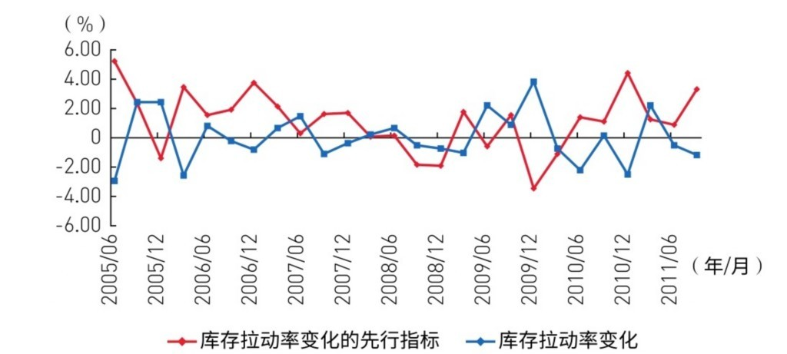

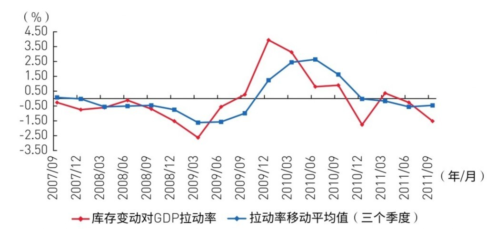
判断库存周期的方法很接地气：低点看汽车，高点看纺织。2011年3月汽车和纺织产能利用率急剧下滑→去库存加速。到了10月，汽车产能利用率回到前期高点附近→短周期力量方向变了。从2011年10月开始，美国进入为期20个月的补库存阶段。
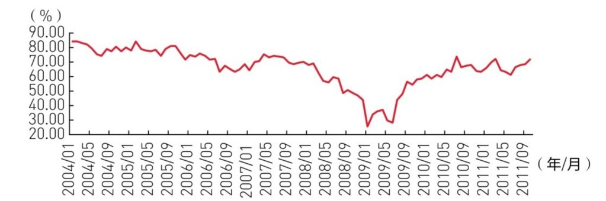
即使房地产周期还没启动（房价企稳但建筑业没跟上），中周期力量已经开始向上，主要来自产能扩张。建筑业周期也有启动迹象——房价企稳、成交量不再萎缩、房租上涨、资本流入都在积累条件。预测：美国2012年GDP约2%，2013年更高。美国经济未来两三年持续恢复是大概率事件。
但这不意味着一帆风顺。周金涛特别强调方法论：经济复苏初期最脆弱，外部冲击可能改变运行轨迹。2012年Q1是两个风险的交叉点，需要高度警惕。
两大风险砸在Q1。一个是外部（欧洲），一个是内部（减税到期）。
风险一：欧债危机还没到最坏时刻。救助措施可以延缓但不能根治——欧债本质是财政问题，没有真正的财政改革一切都是治标。关键时间点：2012年2月意大利到期债务再融资全年最高，这是引爆点。虽然周金涛偏乐观地认为最终能解决，但Q1必然受冲击。
风险二：减税和救济政策到期。美国两党政治僵局→工资税减税和紧急失业救济大概率不会同时延期。退出效果：改善政府债务（正面，但慢）vs. 居民消费下降（负面，立刻显现）。算下来合计拖累GDP约0.7个百分点。但周金涛判断：困难是暂时的，Q1之后美国经济重拾升势。
表10-1给出未来5个季度GDP预测。假设条件：工资税延期+失业救济终止+无新刺激计划（大选年党派斗争，出台刺激可能性低）。因2011年11月数据好于预期，上调Q4预测0.5个百分点。结论：2012年Q1是全年风险最高点，之后重回升势。
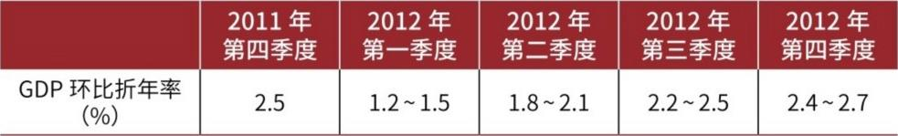
对比欧洲：惨淡。英德法短周期调整比美国晚开始、幅度更大、时间更长。欧洲中周期2年内无法启动（因为产能扩张起不来）。预测：2012年英德法GDP仅0.5%-0.8%，而美国约2%。美强欧弱已成定局。这是美元升值最重要的经济基本面支撑。
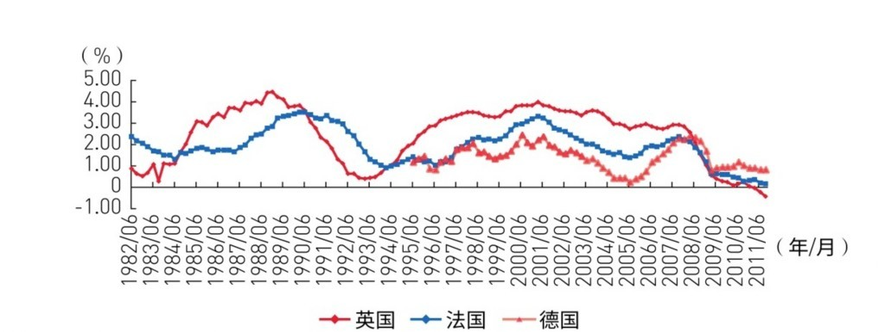
2012-2013年是"美国年"。回顾周金涛团队2011年的预判成绩：6月正确判断美国房价历史大底、9月判断美国无二次衰退+QE3年内不出、Q3 GDP初值2.5%时冷静判断真实值约2%。这些不是猜的——是对周期逻辑的掌握。现在基于同样的周期框架，提出下一个大判断：美元升值。
核心预测：美元2012年破90，2013年破100。这个判断的关键在于美欧经济周期的差异。分析美元≈分析欧元兑美元，因为欧元占美元指数（USDX）权重高达57.6%，是绝对大头。资源国货币（澳元、加元、巴西雷亚尔等）在经济下行时自然走弱，不需要单独分析。
美元指数（USDX）小词典：1973年布雷顿森林体系终结时设立，基准100点。欧元推出后权重调整为：欧元57.6%、日元13.6%、英镑11.9%、加元9.1%、瑞典克朗4.2%、瑞士法郎3.6%。欧元一家独大——所以分析美元走势等于分析欧元兑美元走势。如果看涨美元，核心就是看空欧元。
历史规律：升值5-7年→贬值约10年→再升值。1980-85年涨68%，1995-2002年涨39%。以85为升值启动线，目前（2011年底）美元在底部——80以下区域。如果历史重演，按85算至少也是15%的上涨空间，破百不是幻想。
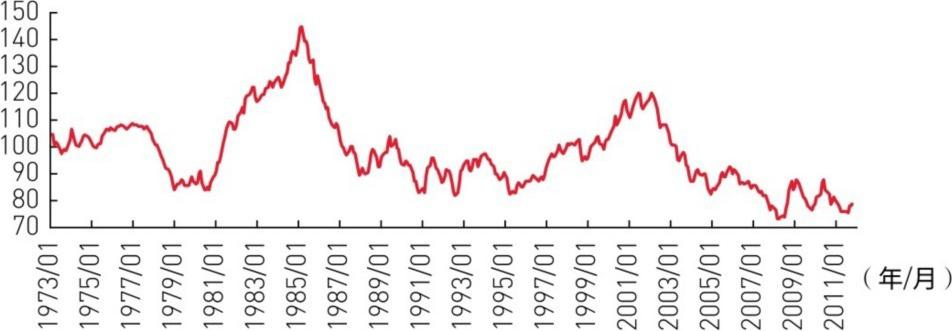
问题转化为：为什么未来两年大家会愿意持有美元？货币选择是市场参与者的集体决策。如果大家预期持有美元更划算→美元需求增加→美元升值。接下来的分析框架：引入"风险折减收益率"概念。

核心理论：风险折减收益率平价。翻译成大白话：投资者选货币，看的是"扣掉风险之后的实际到手收益率"。如果美元的风险折减收益率持续高于欧元和日元→大家就会抢美元→美元升值。这个理论是购买力平价、利率平价等传统理论的"大一统"版本。
风险折减收益率有两个来源：① 真实利率（美联储利率-通胀），存美元赚的利息扣掉通胀还剩多少；② 经济增长-风险（GDP增速-投资风险），在美国做生意的平均回报扣掉风险。环境风险可以用"GDP增速-国债收益率"来估算。只要这两个来源中任何一个持续优于他国，美元就能升值。

渠道一：真实利率。沃尔克1980年把利率拉到20%以上→美国真实利率碾压德法日→美元涨了4年。1995年后美国经济景气→真实利率又高于他国→美元再涨7年。但周金涛特别指出：真实利率高是充分条件但不是必要条件——因为政府可以人为压低利率（比如QE期间利率接近零），这时候真实利率信号失真，需要看第二个渠道。
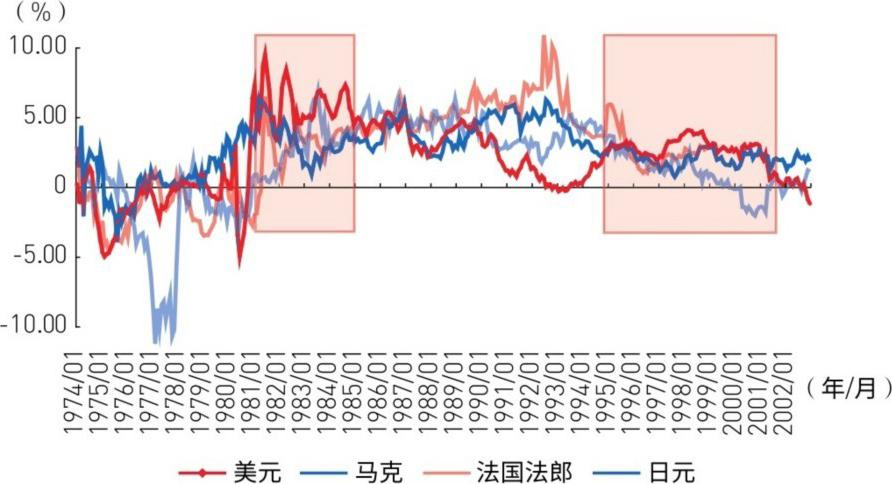
真实利率和GDP增速的关系：正常情况下真实利率围绕GDP增速波动。政府可以人为调节：抬高利率（沃尔克式）→就算GDP不快，风险折减收益率也高→美元升；压低利率（QE式）→真实利率低信号失真，要看实际投资回报也就是渠道二。
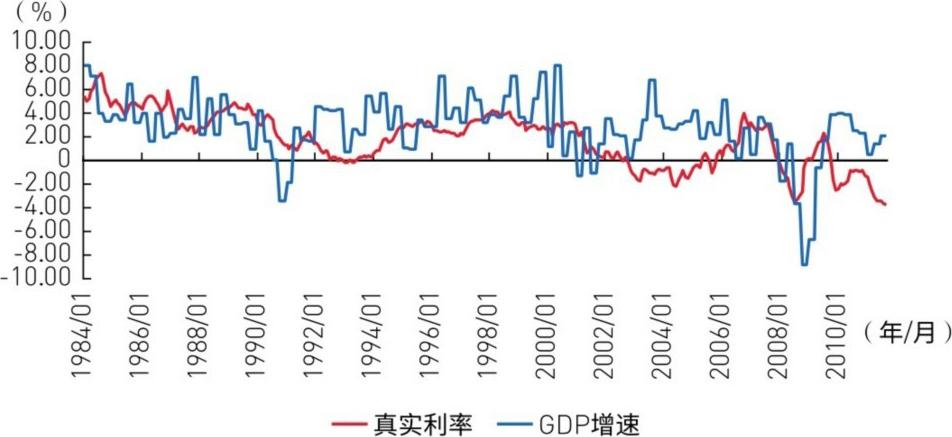
2011年的实际情况：美国真实利率低于欧盟，但结论依然是美元该涨。为什么？因为美国的投资风险远低于欧盟——扣掉风险后，美国的实际收益率反而更高。图10-8只是名义利率对比，没考虑风险这层"折扣"。
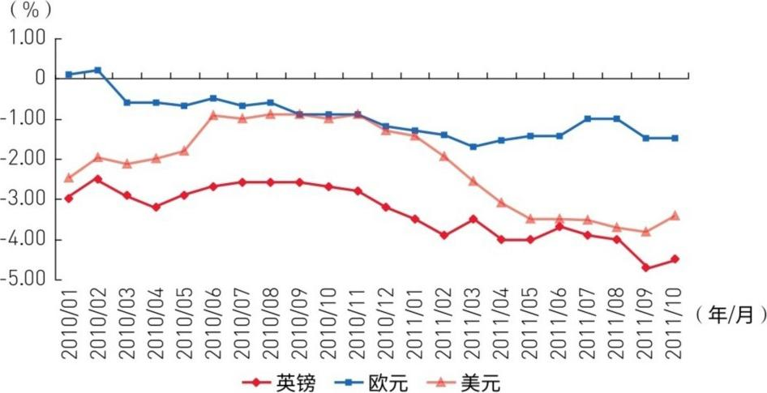
渠道二：GDP增速-风险。1995-2002年美元升值表面看是政府干预（美元储备占比从60%跌到50%→美国联合干预拉回70%），但干预能成功是因为基本面支撑——美国经济增长确实比日本欧洲好，大家投资美国确实赚得更多。干预只是点火，柴（基本面）已经堆好了。
充分条件已确认：美国GDP增速持续高于他国→美元升值必然发生。过程是：美国经济好于他国→越来越多的人发现在美国投资赚得更多→大家换美元投资→美元升值。历史上1992年美国GDP开始超他国→美元对英镑当年就升值→对欧元滞后到1995年（原因见下文"欧元幻觉"）。2011年这个条件再次满足。
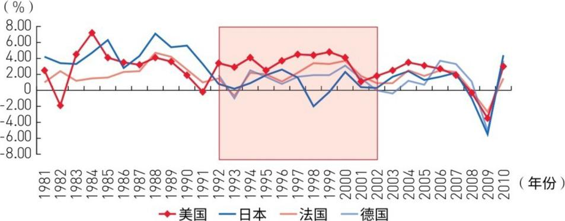
欧元为什么反应慢？"欧元幻觉"在作祟。人们觉得欧元区那么多国家凑在一起=风险分散了=欧元更安全。真相是：中周期调整时大家一起完蛋（"欧猪五国"先爆→意大利→法国→德国，只是节奏不同）。欧元区货币政策调整更烦琐更慢（17个国家开会vs英国一个国家做决策）。所以欧元贬值滞后英镑约4年。但最终调整幅度一样——美元对欧元也会大升。
弗里德曼的发现：美国从来不是孤岛——即使19世纪也一样。美国物价和外部物价通过汇率和通胀两条渠道联动。这个关系非常稳定。
一个150年不变的经济规律：美元相对于英镑的购买力比值始终在0.84-1.11区间内波动，中枢约1.05。两次世界大战都没打破这个规律。低于中枢→美元被低估→即将向上回归。回归有两种方式：英镑贬值 or 美国通胀更高。2008年以来数据处于底部区域→美元被低估，有升值趋势。最近这次回归主要是英镑在贬（而不是美国在通胀）。
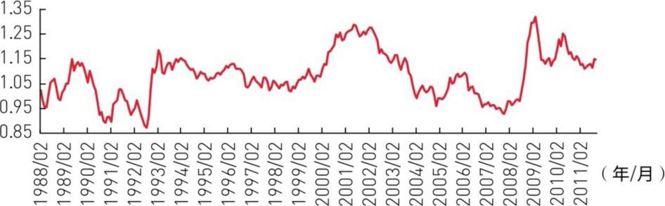
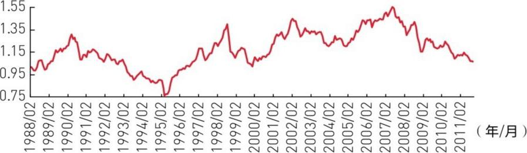
美元/日元的购买力也在一个稳定区间内波动，中枢约1.15。但目前比值在中枢附近——所以单看购买力平价，无法判断日元未来方向。这和英镑、欧元不同（它们在底部，方向明确）。

美元/欧元的购买力也在底部区域。中枢1.0-1.2，现在处于底部→指向美元升值。要让比值回到中枢有两种方式：美元升值 or 美国通胀碾压欧洲。后者不现实（需要美国3年通胀超欧洲30%以上不会发生。所以只能是美元升值。
关键洞察：美联储的印钱是可以收回的。QE放水制造了弱势美元，但美联储手里有MBS、ABS这些资产——经济好转时可以卖掉它们回收流动性。这一点和中国不同：中国投出去的钱很多以低效率投资转为个人所有，成了通胀隐患，收不回来。所以美国通胀可控，弱势美元可以逆转。
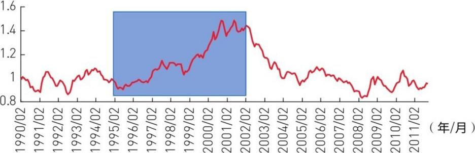
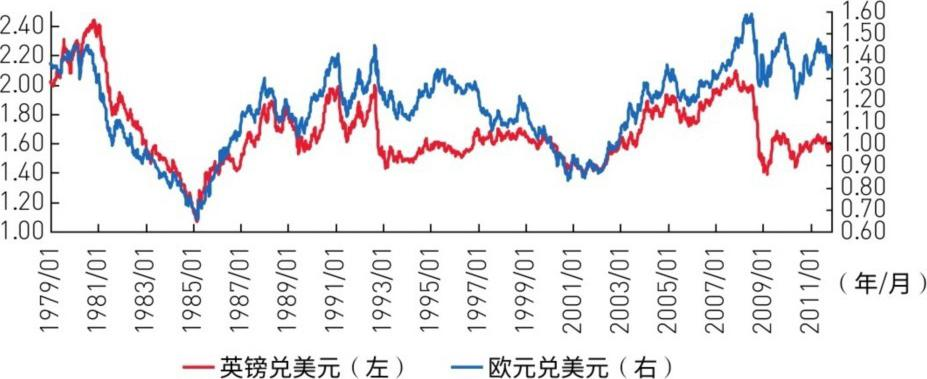
妙招：用英镑预测欧元。1992年欧元成立之前，英镑和欧洲货币单位走势完全同步。1992年之后，两者分道扬镳——英镑波动更快、更灵敏，欧元滞后。两个原因。
原因一：欧元区货币政策"船大难掉头"。17个国家一起做决策，比英国一个国家慢得多。图10-14证明：1992年英镑大贬之前，英镑M2四年增速远超欧元→"印钞积累"到临界点→贬值爆发。图10-15证明：2007年起同样的画面重现——英镑M2增速又大幅超欧元→英镑2009年开始贬值。但别忘了，欧债危机下欧洲央行也会被迫放水→欧元最终会跟上英镑的贬值节奏。
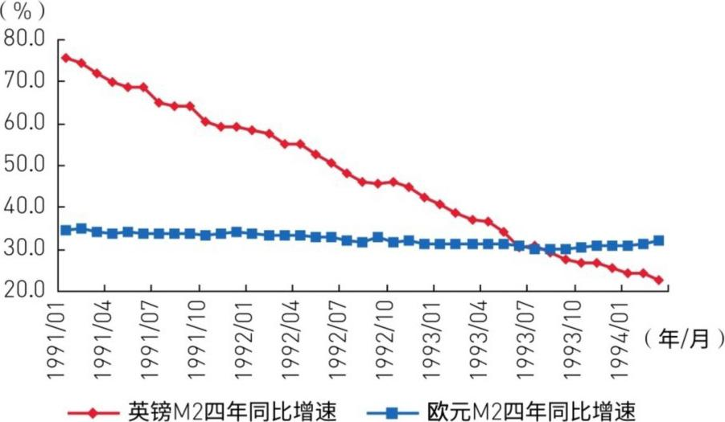
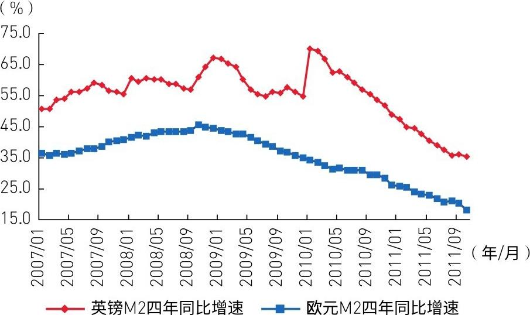
原因二：欧元幻觉。市场觉得17国用同一种货币=风险分散=欧元更安全。真相是：中周期调整时一起遭殃，只是排队顺序不同（"欧猪五国"→意大利→法国→德国）。欧元区整体经济不比英国好，但幻觉支撑了欧元的虚假强势，延缓了贬值。
历史规律：欧元贬值滞后英镑约4年。1993-2002年的剧本：英镑先贬→4年后欧元跟上→两者同步。新剧本：英镑2009年开始贬值→4年后=2012年→欧元该开始了。欧债危机还会加速这个进程。预测路径：欧元下跌20%以上→推动美元指数破百。2012年是美元相对于欧元趋势性升值的起点。
经典的质疑：美元升值=出口变贵=损害出口=不利复苏→美国应该会阻止升值。周金涛的反驳：从两年维度看，升值对美国有利无害。两个原因。
原因一：J曲线效应。什么是J曲线？货币升值→短期内进出口合同已经签了，交易量和价格不变→贸易逆差不会马上恶化。等合同更新（通常1-2年），美国经济可能已经走强了，届时升值的基础也变了。历史证明：1980-83和1995-97年，美元大幅升值前3年贸易逆差都没扩大。
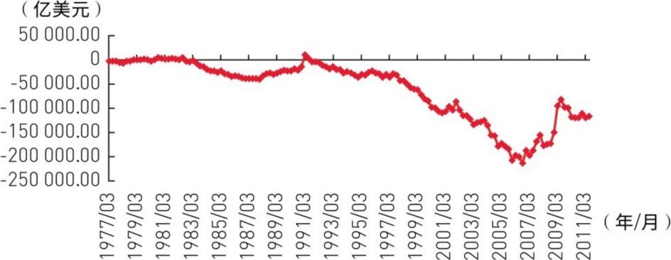
注意：升值有自我终结机制——升得太久→竞争力下降→经济变差→升值基础消失→停止升值。所以美元升值周期一般是5-7年，不会无限持续。
原因二：美国极度缺钱，升值=免费融资。美国净储蓄为负（花的比存的多），政府连年赤字，急需外部资金。美元升值吸引全球资本流入→企业有钱扩产→增加就业→促进实体经济。和这个利益相比，出口那点损失算什么？美国不但不会阻止美元升值，反而乐于见到。
更深层的原因：现代贸易由资源禀赋决定，不是价格决定。日本和德国就是最好的例子——日元、马克大幅升值几十年，贸易顺差纹丝不动。因为德国制造、日本精密工艺的竞争力不是汇率能抹掉的。所以升值对贸易的伤害被高估了。
历史规律：每次美元大升值都会"炸掉"一批国家。1980s美元牛市→拉美债务危机；1990s美元牛市→日本失落的十年。这次呢？如果只是短时间、小幅升值，中国有3万亿外汇储备扛得住。但如果美元长时间、大幅升值，同时中国正处于"增长中枢下移"过程中→共振→加速泡沫破裂。
关键逻辑链：资本的本性是逐利。以前中国增速高→高收益留住资本→风险虽大，资本也愿意留下来赌。现在中国增速放缓+美元持续走强→美国资产吸引力上升→资本外逃→资产价格下跌。核心变量不是汇率本身，是"风险折减后的收益率"比较发生了变化。
就算人民币盯住美元一起升也没用。因为投资者比较的不是汇率方向，是风险调整后的回报率。美国风险小于中国→同样跟着美元升值，钱也会选美国而不是中国。周金涛在2011年底就敲响了警钟：中国正面临"增长中枢下移+美元升值周期"的双重压力。